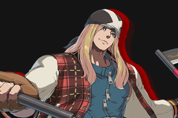
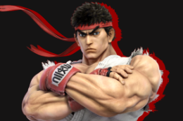
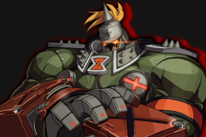
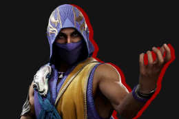
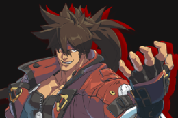
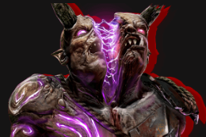

Zoner

Character's with long reaching attacks to keep their opponent at bay. These characters usally play defensivly for most matches as the typically have low health.
Examples of Zoners include:
- Axl Lou: Guilty Gear
- Dhalsim: Street Fighter
- Erron Black: Mortal Kombat
- Doctor Doom: Marvel Vs. Capcom 2
Shoto

These characters are known for being all-rounders. They usally have a special move for any situation. They all typically have a projectile for long distance, uppercut for airborne opponents, and a move that travels forward to close the distance.
Examples of Shotos include:
- Ryu: Street Fighter
- Ky: Guilty Gear
- Sub-Zero: Mortal Kombat
- Gran: Granblue Fantasy Versus
Grappler

These characters are known for how much damage they are able to dish out in one single move. Many of their attacks consist of grabing the opponent which makes the move impossible to block. This comes with set backs as grapplers are usally larger than other characters, making them much more easy to hit. They also have slow speed which can make it difficult to approach.
Examples of Grapplers include:
- Potemkin: Guilty Gear
- Zangeif: Street Fighter
- Astaroth: Soulcaliber
- Ganryu: Tekken
Setplay

These characters have incredible mix-ups and pressure by limiting the opponent's options. This can be done by a slow moving projectile or a mine-like trap. This can force your opponent to block which can allow you to oki them. These characters can be harder to play but can lead to amzing results.
Examples of Setplay characters include:
- Rain: Mortal Kombat 1
- Nappa: Dragon Ball FighterZ
- Milla: Guilty Gear
Rushdown

These characters are all about offense. They're main goal in a match is to as close to the opponent as possible. They usally have good mix-up and combo potential. This means that their defensive capabilites and health aren't the best but if you know how to counter your opponents blocks you can ensure victory.
Examples of Rushdowns include:
- Sol: Guilty Gear
- Balrog: Street Fighter
- Aegis: Persona 4 Arena
- Gran: Granblue Fantasy Versus
Stance

Arguably the most complex archetype, stance characters can be the most technical character in their game. These characters have a special move that changes the properties of their attacks. These can even give the play access to new moves that can only be performed while in the stance.
Examples of Stance characters include:
- Eyedol: Killer Instinct
- Leo: Guilty Gear
- Rashid: Street Fighter